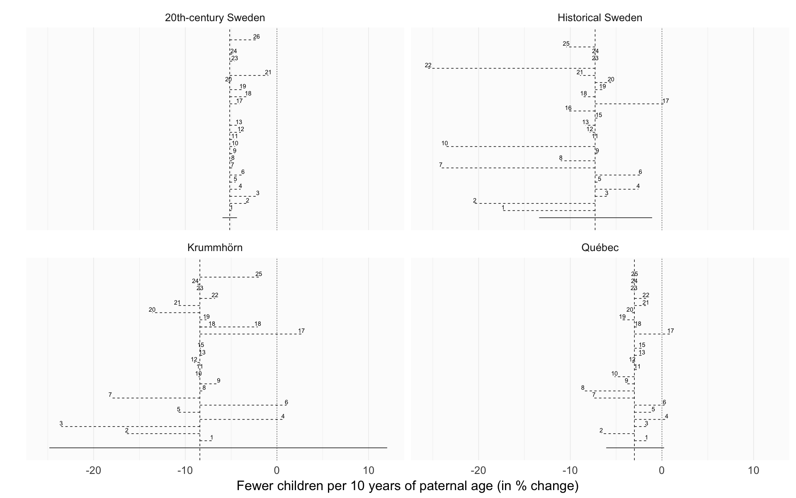

Comparison of robustness checks across populations
Loading details
source("0__helpers.R")
library(brms)
opts_chunk$set(warning=FALSE, cache=F,cache.lazy=F,tidy=FALSE,autodep=TRUE,dev=c('png','pdf'),fig.width=20,fig.height=12.5,out.width='1440px',out.height='900px')Analysis description
Here we show the effect size estimates for paternal age in different robustness analyses.
if(!file.exists("coefs/robustness_comparison.rdata")) {
main_mods = c("coefs/krmh/m3_children_linear.rds",
"coefs/rpqa/m3_children_linear.rds",
"coefs/ddb/m3_children_linear.rds",
"coefs/swed/m3_children_linear.rds")
paths = c(main_mods,
list.files("coefs", full.names = TRUE, pattern = "^r\\d.+rds$", recursive = T))
filenames = c(main_mods,
list.files("coefs", full.names = TRUE, pattern = "^r\\d.+rds$", recursive = T))
i=1
effect_estimates = data.frame()
for (i in seq_along(paths)) {
filename = filenames[i]
try({
model = readRDS(paths[i])
if (class(model) == "brmsfit") {
chg = paternal_age_10y_effect(model)[3,]
chg$model = filename
chg$robustness_analysis = as.numeric(str_match(filename, "/r(\\d+)")[,2])
if (is.na(chg$robustness_analysis)) {
chg$robustness_analysis = 0
}
chg$population = str_match(paths[i], "\\w+/(\\w+)/")[,2]
effect_estimates = rbind(chg, effect_estimates)
}
rm(model)
}, silent = T)
}
save(effect_estimates, file = "coefs/robustness_comparison.rdata")
} else {
load("coefs/robustness_comparison.rdata")
}
effect_estimates = effect_estimates %>% arrange(robustness_analysis) %>% mutate(
median_estimate = as.numeric(median_estimate),
lower95 = as.numeric(str_match(ci_95, "\\[ *(-?[0-9.]+);")[,2]),
upper95 = as.numeric(str_match(ci_95, "; *(-?[0-9.]+)]")[,2]),
lower80 = as.numeric(str_match(ci_80, "\\[ *(-?[0-9.]+);")[,2]),
upper80 = as.numeric(str_match(ci_80, "; *(-?[0-9.]+)]")[,2])
)
pops = c("krmh", "rpqa", "ddb", "swed")
effect_estimates$lower95_2 = effect_estimates$lower95
effect_estimates$upper95_2 = effect_estimates$upper95
for (i in seq_along(pops)) {
pop = pops[i]
effs = effect_estimates[which(effect_estimates$population == pop), ]
effs$lower95[2:nrow(effs)] = effs$median_estimate[1]
effs$upper95[2:nrow(effs)] = effs$median_estimate[2:nrow(effs)]
effect_estimates[effect_estimates$population == pop, ] = effs
}
pops = c("krmh"='Krummhörn', "rpqa" = 'Québec', "ddb" = 'Historical Sweden', "swed" = '20th-century Sweden')
effect_estimates$population = pops[effect_estimates$population]Comparison graph
Legend: In reference to m3, the main reported model, the robustness models were implemented as follows: r1 relaxed exclusion criteria (not in 20th-century Sweden), r2 had only birth cohort as a covariate, r3 adjusted for birth order as a continuous variable, r4 adjusted for number of dependent siblings instead of birth order, r5 interacted birth order with number of siblings, r6 did not adjust for birth order, r7 adjusted only for parental loss in the first 5 years, r8 adjusted for being the first-/last-born adult son, r9 adjusted for a continuous nonlinear thin-splate spline for birth year instead of 5-year bins, r10 added a group-level slope for paternal age, r11 included separate group-level effects for each parent instead of one per marriage, r12 added a moderation by anchor sex, r13 adjusted for paternal age at first birth, r14 compared a model with linear group fixed effects, r15 added a moderator by region and group-level effects by church parish (not in 20th-century Sweden), r16 was restricted to Skellefteå (only in historical Sweden), r17 tested whether hypothetical cases of Down’s syndrome could explain the effects, r18 reversed hurdle Poisson and Poisson distribution for the respective populations, r19 used a normal distribution, r20 did not adjust for maternal age, r21 adjusted for maternal age as a continuous variable, r22 relaxed exclusion criteria and included 30 more years of birth cohorts, allowing for more potential censoring, r23 used Student’s t distributions for population-level priors and half-Cauchy priors for the family variance component, r24 used noninformative priors, which should lead to results comparable with maximum likelihood, r25 controlled for migration status (not in 20th-century Sweden), r26 separate parental age contributions (only in 20th-century Sweden).
Variable axes
robustness_comparison = ggplot(effect_estimates, aes(x = factor(robustness_analysis), y = median_estimate, ymin = lower95_2, ymax = upper95_2)) +
geom_hline(aes(yintercept = ifelse(robustness_analysis == 0, median_estimate, NA)), linetype = 'dashed', na.rm = T) +
geom_hline(yintercept = 0, linetype = 'dotted') +
geom_linerange(aes(linetype = robustness_analysis == 0)) +
geom_text(aes(label = ifelse(robustness_analysis == 0, "", robustness_analysis), group = effect), vjust = -0.3) +
scale_linetype_manual(values = c("FALSE" = 'dashed', "TRUE" = 'solid'), guide = F) +
facet_wrap(~ population, scales = "free", nrow = 2, ncol = 2) +
scale_x_discrete("", expand = c(0.07,0.07)) +
scale_y_continuous("Fewer children per 10 years of paternal age (in % change)") +
theme(axis.ticks.y = element_blank(),
axis.text.y = element_blank(),
panel.grid.major.y = element_blank(),
panel.background = element_rect(size = 0, fill = "#FCFCFC", color = NA)) +
coord_flip()
robustness_comparison
Variable axes, no credible intervals
robustness_comparison2 = ggplot(effect_estimates, aes(x = factor(robustness_analysis), y = median_estimate, ymin = lower95, ymax = upper95)) +
geom_hline(aes(yintercept = ifelse(robustness_analysis == 0, median_estimate, NA)), linetype = 'dashed', na.rm = T) +
geom_hline(yintercept = 0, linetype = 'dotted') +
geom_linerange(aes(linetype = robustness_analysis == 0)) +
geom_text(aes(label = ifelse(robustness_analysis == 0, "", robustness_analysis), group = effect), vjust = -0.3) +
scale_linetype_manual(values = c("FALSE" = 'dashed', "TRUE" = 'solid'), guide = F) +
facet_wrap(~ population, scales = "free", nrow = 2, ncol = 2) +
scale_x_discrete("", expand = c(0.07,0.07)) +
scale_y_continuous("Fewer children per 10 years of paternal age (in % change)") +
theme(axis.ticks.y = element_blank(),
axis.text.y = element_blank(),
panel.grid.major.y = element_blank(),
panel.background = element_rect(size = 0, fill = "#FCFCFC", color = NA)) +
coord_flip()
robustness_comparison2Same axes
Here we use the same axes to make effect sizes comparable across populations.
robustness_comparison_same_axes = ggplot(effect_estimates, aes(x = factor(robustness_analysis), y = median_estimate, ymin = lower95, ymax = upper95)) +
geom_hline(aes(yintercept = ifelse(robustness_analysis == 0, median_estimate, NA)), linetype = 'dashed', na.rm = T) +
geom_hline(yintercept = 0, linetype = 'dotted') +
geom_linerange(aes(linetype = robustness_analysis == 0)) +
geom_text(aes(label = ifelse(robustness_analysis == 0, "", robustness_analysis), group = effect), vjust = -0.3) +
scale_linetype_manual(values = c("FALSE" = 'dashed', "TRUE" = 'solid'), guide = F) +
facet_wrap(~ population, nrow = 2, ncol = 2) +
scale_x_discrete("", expand = c(0.07,0.07)) +
scale_y_continuous("Fewer children per 10 years of paternal age (in % change)") +
theme(axis.ticks.y = element_blank(),
axis.text.y = element_blank(),
panel.grid.major.y = element_blank(),
panel.background = element_rect(size = 0, fill = "#FCFCFC", color = NA)) +
coord_flip()
robustness_comparison_same_axes
Interactive plot
In this interactive plot, move your mouse below the number to make a tooltip with the name of the robustness model appear. Clicking will bring up details for this robustness analysis in this population.
library(rbokeh)
effect_estimates = effect_estimates %>%
mutate(
r_label = str_match(model, "/(r\\d+_.+?)\\.rds$")[,2],
r_label = if_else(is.na(r_label),"m3 model with 95% CI", r_label),
r = paste0(r_label, " ", median_estimate),
lty = if_else(robustness_analysis == 0, 1, 2),
link_to_analysis = if_else(robustness_analysis == 0,
str_replace(
str_replace(
str_replace(model, "coefs/", "2_"),
"\\.rds", ""),
"/m", "_main_models.html#m"),
str_replace(
str_replace(
str_replace(model, "coefs/", "5_"),
"\\.rds", ""),
"/r", "_robustness.html#r"))
)
bokeh_coef_plot = function(., population) {
link_to_analysis = .[["link_to_analysis"]]
figure(., title = population, tools = NULL, toolbar_location = NULL) %>%
ly_points(median_estimate, robustness_analysis,
color = 'black',
alpha = 0.05,
glyph = 'cross',
hover = "<strong>@r_label</strong> @median_estimate",
url = link_to_analysis) %>%
ly_text(median_estimate, robustness_analysis,
text = robustness_analysis,
font_size = "10pt"
) %>%
ly_segments(y0 = robustness_analysis,
x0 = lower95,
y1 = robustness_analysis,
x1 = upper95,
type = 2
) %>%
ly_segments(x0 = ifelse(robustness_analysis == 0, median_estimate, NA),
x1 = ifelse(robustness_analysis == 0, median_estimate, NA),
y0 = 0,
y1 = 26,
type = 2) %>%
y_axis(label = "", visible = F) %>%
x_axis(label = "Fewer children per 10 years of paternal age (in % change)")
}
grid_plot(list(
list(
"20th-century Sweden" = effect_estimates %>% filter(population == "20th-century Sweden") %>%
bokeh_coef_plot("20th-century Sweden"),
"Historical Sweden" = effect_estimates %>% filter(population == "Historical Sweden") %>%
bokeh_coef_plot("Historical Sweden")
),
list(
"Krummhörn" = effect_estimates %>% filter(population == "Krummhörn") %>%
bokeh_coef_plot("Krummhörn"),
"Québec" = effect_estimates %>% filter(population == "Québec") %>%
bokeh_coef_plot("Québec")
)
),
same_axes = c(F, T),width = 1000,height=800
)Comparison table
In this comparison table, the model names are clickable and lead to the model details. The list is dynamic and can be subset and ordered by population and model.
effect_estimates = effect_estimates %>% mutate(
link = paste0("<a title='View model details' href='",link_to_analysis,"'>",r_label,"</a>"),
population = factor(population)
)
saveRDS(effect_estimates, file = "coefs/robustness_comparison_table.rdata")
DT::datatable(effect_estimates %>% select(population, link, median_estimate, ci_95),
filter = 'top', escape = c(1,3,4), options = list(
pageLength = 50, autoWidth = TRUE
), rownames = F)ggsave(plot = robustness_comparison, "../paternal_age_fitness/library/robustness_comparison.png", width = 17.8, height = 17.8*0.625)
ggsave(plot = robustness_comparison, "../paternal_age_fitness/library/robustness_comparison.pdf", width = 17.8, height = 17.8*0.625, scale = 3, device = cairo_pdf, units = "cm", dpi = 600)